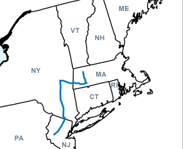

Day One
Greenfield, MA - Clinton, NJ
Distance: 274 miles
Weather: Partly sunny, high of 94°.
First destination was to Corin's parents' house in Clinton, New Jersey. We had a late start (4:00 pm) so it was all highways.
Listened to two episodes of This American Life from our 143 episode collection. (Episodes 59 and 60)
Ogden spent the entire trip chewing on her raw hide bone and sleeping. She's still not super comfortable with new places.
We were treated to an incredible sunset. A bright pink sun which disappeared behind the hazy sky.
We arrived around 9:00 pm for a wonderful late dinner.